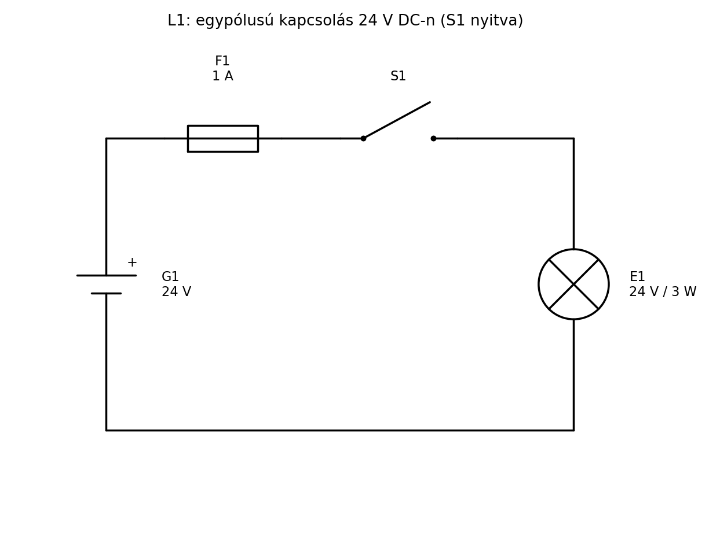
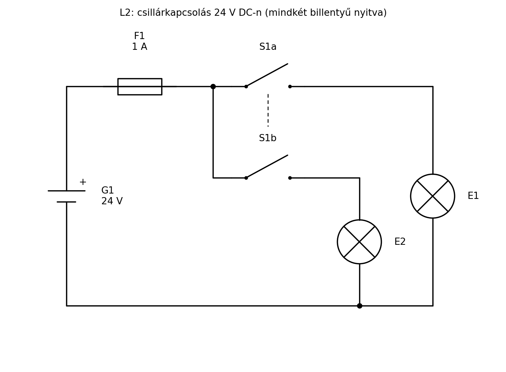
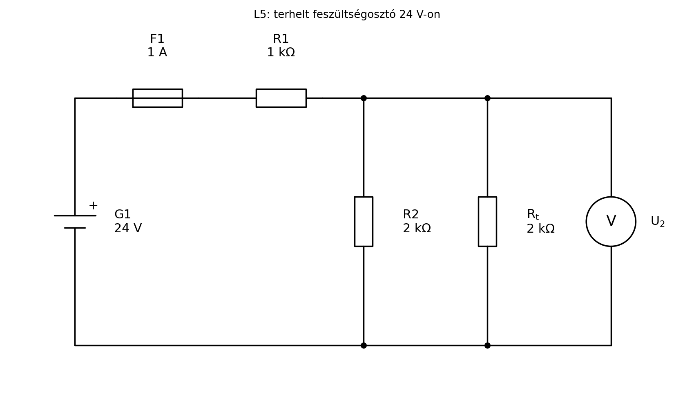
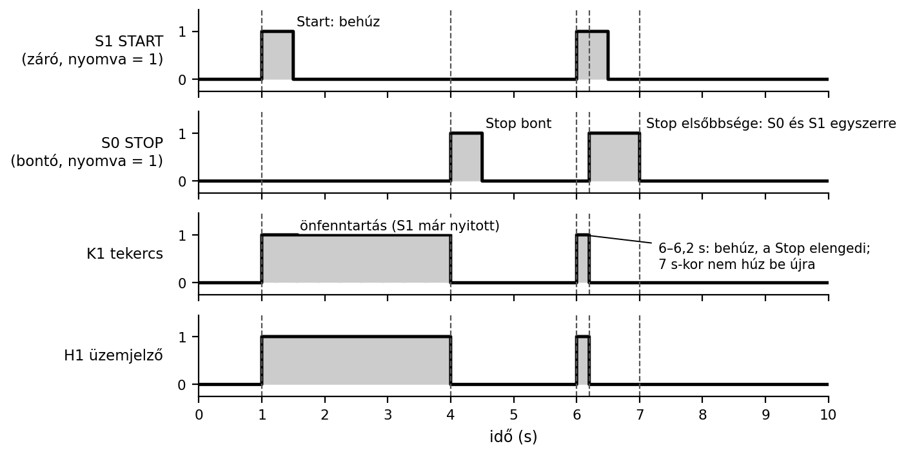
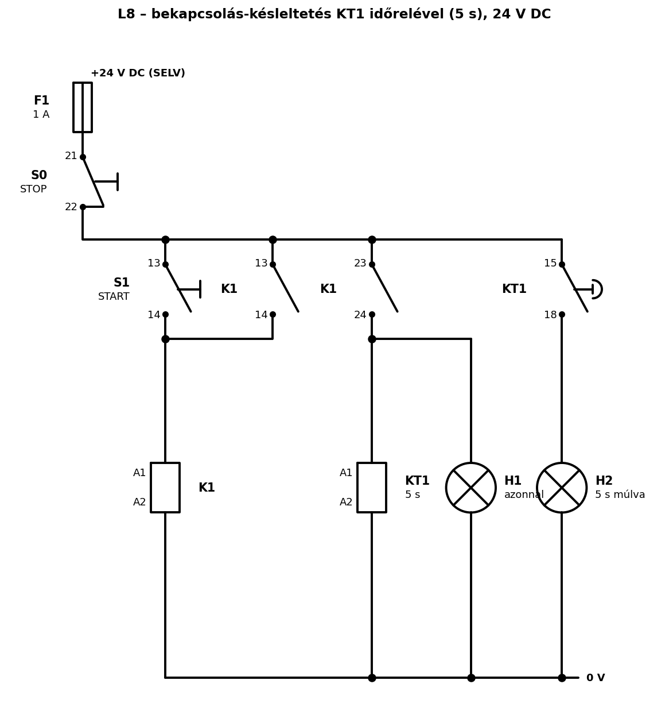
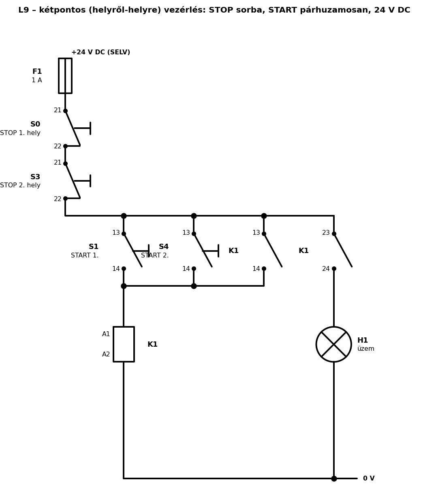

Ez a kötet a Villanyszerelő – villamos berendezés- és készülékszerelő szakirány tankönyv kísérője: fejezetenként és alfejezetenként, azonos számozással gyűjti össze a kidolgozott példákat, gyakorlati útmutatókat és esettanulmányokat, interaktív gyakorlókat, önellenőrző kérdéseket, feladatokat és megoldásokat. Előbb a tankönyv alfejezetét olvasd el, utána dolgozz a gyűjtemény ugyanilyen számú szakaszával: oldd meg a feladatot önállóan, és csak ezután nézd meg a megoldást. A „(tankönyv, N.M)” jelölés a tankönyv megfelelő alfejezetére utal. Gyakorlati feladatot csak feszültségmentes, törpefeszültségű vagy felügyelt tanműhelyi körülmények között végezz, az öt biztonsági szabály betartásával.
A kapcsolódó elmélet: tankönyv, 1.1 alfejezet.
A válaszokat a Megoldások szakasz elején, az „Önellenőrzés – válaszok” alcím alatt találod.
1. feladat (A). Sorold fel a könyv tíz részét, és mindegyikhez írj egy olyan tanulási célt, amely a villanyszerelői munkában fontos.
2. feladat (A). Válaszd ki a III. részt a kompetenciatérképből, és indokold meg, miért kapcsolódik a vezetékméretezéshez és a szabványos rajzjelekhez.
3. feladat (B). A fenti alfejezet-szerkezet tizenkét pontja közül melyik hiánya veszélyezteti leginkább a biztonságos gyakorlati munkát? Indokold a választ.
4. feladat (B). Csoportosítsd a következő szakmai feladatokat a megfelelő könyvfejezethez: „egy háromfázisú aszinkron motor csillag–delta indítása”, „lakáselosztó FI-reléjének ellenőrzése”, „egy vezeték méretezése terhelhetőségre és feszültségesésre”, „mágneskapcsolós önfenntartó kapcsolás bekötése”.
5. feladat (C). Tervezz egy rövid heti tanulási tervet egy olyan tanuló számára, aki napi 1,5 órát tud tanulni, és a vizsgáig 6 hét van. A tervben szerepeljen a II. rész néhány alfejezete, a IV. rész lakás-elosztós gyakorlata és a V. rész védelmi méréseket tárgyaló része. Ne felejtsd el beilleszteni az önellenőrzést és a feszültségmentes gyakorlást.
6. feladat (D). Keress egy villamos kapcsolási rajzot egy lakáselosztóhoz (pl. e könyv Lakás- és épületelosztó felépítése (tankönyv, 17.2) alfejezetéből vagy a jegyzetedből). Azonosítsd rajta a kismegszakítót, az áram-védőkapcsolót, a védővezetőt és a nulla vezetőt. Írd le, hogy a valós elosztóban hol találhatók ezek az elemek, és hogyan ellenőriznéd feszültségmentes állapotban a bekötésüket.
7. feladat (B) – keresőgyakorlat. Keresd meg a választ, és írd fel, hol találtad (melyik függelék vagy alfejezet):
A tíz rész és egy-egy tanulási cél:
A III. rész az anyagismeretet, a műszaki rajzot és a dokumentációt öleli fel. A vezetékméretezéshez szükséges a vezetők anyagának, hőmérsékletfüggésének és terhelhetőségének ismerete, amelyet a Vezetékek és kábelek (tankönyv, 10) tárgyal. A szabványos rajzjelek ismerete nélkül a kapcsolási rajzokban nem tudjuk azonosítani a védelmi készülékeket, így a dokumentáció olvasása és készítése is hibás lesz. Mindkettő a III. részben található.
A gyakorlati útmutató hiánya veszélyeztetné leginkább a biztonságos munkát. Ez a pont tartalmazza a cél, az eszközök, a biztonsági korlát, az öt biztonsági szabály, a számozott lépések, az ellenőrzési pontok, a tipikus hibák és a dokumentálás leírását. Enélkül a tanuló nem tudná, mikor és milyen sorrendben kell feszültségmentesíteni, és a gyakorlati vizsgán súlyos hibát követne el.
A terv csak egy lehetséges megoldás. Heti 5 tanulási nap, 1,5 óra/nap.
| Hét | Téma (könyvfejezet) | Tanulási cél | Gyakorlat/önellenőrzés |
|---|---|---|---|
| 1. | I. rész: Villamos munkavégzés biztonsága: az öt szabály és a munkaengedély (tankönyv, 2.4) – az öt szabály sorrendje | Lekapcsolás, visszakapcsolás elleni biztosítás, feszültségmentesség ellenőrzése, földelés és rövidre zárás, szomszédos részek lefedése | Feszültségmentesítés lépéseinek eljátszása törpefeszültségű tanlapon, a kétpólusú feszültségvizsgáló előzetes ellenőrzésével (nem fázisceruzával) |
| 1. | II. rész: Alapfogalmak, Ohm-törvény | Feszültség, áram, ellenállás, teljesítmény kiszámítása | Számolási feladatok, mértékegységekkel |
| 2. | II. rész: Váltakozó áram, háromfázisú rendszer | Szinuszos jelek, fázisfeszültség, vonali feszültség | Háromfázisú teljesítményszámítás, fázorábra rajz |
| 3. | IV. rész: Szereléstechnika, világítási áramkörök | Kapcsolók, váltó és kereszt kapcsolás | Törpefeszültségű kapcsolás összeállítása, önellenőrzés; szerelés előtt az öt szabály végrehajtása és dokumentálása |
| 4. | IV–V. rész: Elosztó, hibavédelem, FI-relé | Lakáselosztó felépítése, védelmi elemek | Lakáselosztó rajz elemzése, FI-mérés elmélete |
| 5. | V. rész: Mérések, jegyzőkönyv | Hurokimpedancia, FI-vizsgálat, szigetelési mérés | Mintamérési jegyzőkönyv kitöltése |
| 6. | X. rész: Vizsgafelkészülés | Teljes tananyag rendszerezése | Komplex feladatok, rajz–valóság–mérés hármas alkalmazása |
A feladatban adott rajzon a kismegszakítókat Q1, Q2, … jelöli, az áram-védőkapcsolót a rajzjele (kapcsolójel, amelyhez szaggatott vonallal az differenciaáram-érzékelő doboz kapcsolódik) és a betűjele (pl. Q0 vagy F1, a terv jelölési rendszerétől függően) azonosítja; köznyelvi neve FI-relé. A védővezető zöld-sárga színű, PE jelölésű, a nullavezető világoskék színű, N jelölésű. A valós elosztóban ezek az elemek a DIN-sínre vannak pattintva, a védővezetőket a zöld-sárga készüléksorkapocshoz, a nullavezetőket a kék sínhez kell csatlakoztatni, a fázisvezetőket pedig a kismegszakító kimeneteire. Biztonsági korlát. Valós elosztót tanulóként csak oktató felügyeletével nyiss meg. Előbb az öt biztonsági szabály szerint feszültségmentesíts (lekapcsolás, visszakapcsolás elleni biztosítás, a feszültségmentesség ellenőrzése bevizsgált kétpólusú feszültségvizsgálóval minden vezetőpár között – nem fázisceruzával –, földelés és rövidre zárás, a szomszédos feszültség alatti részek lefedése), csak utána vizsgáld a bekötést; lásd Villamos munkavégzés biztonsága: az öt szabály és a munkaengedély (tankönyv, 2.4). Feszültségmentes állapotban ellenőriznéd a védővezetők folytonosságát, a kapcsok meghúzását, a feliratok meglétét és a rajzzal való egyezést.
A kapcsolódó elmélet: tankönyv, 1.2 alfejezet.
A belépő teszt nem vizsga, és nem befolyásolja a képzési eredményt. Célja, hogy megmutassa, mely részeket kell teljes mélységben elvégezned, hol elég ismételni, és hol léphetsz gyorsabban. A teszt 24 kérdése négy, hatkérdéses blokkból áll. Töltsd ki önállóan, segédeszközként legfeljebb számológéppel; a válaszokat a Megoldások „Belépő teszt – válaszok” részében találod. Minden jó válasz 1 pont, a pontokat blokkonként add össze. Amit tippelsz, azt jelöld meg, és számold hibásnak.
A) Számolás, mértékegység. Ajánlott alfejezetek: Mennyiségek, mértékegységek, előtagok és számolási rutin (tankönyv, 3.2), Ohm törvénye, villamos munka, teljesítmény és hatásfok (tankönyv, 3.3).
B) Villamos alapfogalmak. Ajánlott alfejezetek: Soros kapcsolás és feszültségosztó (tankönyv, 4.1), Párhuzamos kapcsolás és áramosztó (tankönyv, 4.2), Szinuszos mennyiségek és fázorok (tankönyv, 6.1), A háromfázisú rendszer és a hálózati jellemzők (tankönyv, 7.1).
C) Jelölés és rajzolvasás. Ajánlott alfejezetek: Színjelölés, keresztmetszet és szerelési módok (tankönyv, 10.2), Rajzjelek és jelölések (MSZ EN 60617) (tankönyv, 12.1), Áramúti, kapcsolási és huzalozási rajz; világítási áramkörök (tankönyv, 12.2).
D) Biztonság és védelem. Ajánlott alfejezetek: Villamos munkavégzés biztonsága: az öt szabály és a munkaengedély (tankönyv, 2.4), Az áram élettani hatásai és az elsősegélynyújtás (tankönyv, 2.3), Áram-védőkapcsoló (FI) és kiegészítő védelem (tankönyv, 21.4).
Értékelés blokkonként: 5–6 pont → ebben a témában gyorsíthatsz; 3–4 pont → kiegészítő munka: a blokkhoz megadott alfejezetek feladatait oldd meg; 0–2 pont → a témát teljes mélységben vedd. Az útvonalat az alábbi szabályok sorrendben döntik el:
| Pontszámok (sorrendben vizsgáld) | Javaslat |
|---|---|
| A D blokk 5 pont alatti | Bármelyik útvonalon először az I. rész (biztonság), utána sorold be magad újra |
| Legalább két blokk 0–2 pontos | Teljes útvonal |
| Mind a négy blokk legalább 5 pontos | Vizsgafelkészítő útvonal |
| Minden egyéb esetben | Kiegészítő útvonal a gyenge (4 pontos vagy gyengébb) blokkok alfejezeteivel |
A tesztet a tanulás végén, a Vizsgatérkép és számolási képletgyűjtemény (tankönyv, 44.1) előtt töltsd ki újra; a két pontszám különbsége a haladásod.
1. feladat (A). Sorold fel a könyv három tanulási útvonalát, és mindegyikhez írj egy olyan helyzetet, amikor azt érdemes választani.
2. feladat (A). Váltsd át: és .
3. feladat (B). Állíts össze egy heti tanulási tervet 8 órára egy általad választott alfejezethez a fenti minta alapján. Nevezd meg az alfejezetet és a hozzá tartozó vizsgarészt.
4. feladat (B). Egy tanuló belépőtesztje: A = 6, B = 5, C = 3 (nem ismerte fel a zöld-sárga vezető szerepét), D = 5. Melyik tanulási útvonalat javasolnád neki? Indokold, és nevezd meg azt az alfejezetet, amelyet először érdemes tüzetesen elvégeznie.
5. feladat (C). Melyik vizsgarészhez tartozik leginkább az a helyzet, amikor egy kapcsolószekrényben mérőműszerrel kell megkeresni egy szándékosan bekötött hibát? Milyen könyvbeli alfejezeteket használnál a felkészüléshez, és miért?
6. feladat (D). Tervezd meg a szakmai jegyzetfüzeted első három hetének vezetési rendjét. Add meg, hogy az egyes hetekben melyik alfejezetet dolgozod fel, és milyen bejegyzéseket fogsz készíteni az olvasáshoz, a feladatokhoz és a gyakorlati részhez.
A) Számolás, mértékegység
B) Villamos alapfogalmak
C) Jelölés és rajzolvasás
D) Biztonság és védelem
Önellenőrzés – válaszok
1. feladat (A). A három útvonal: teljes (kezdőknek, akiknek a villamos alapok hiányoznak), kiegészítő (tanfolyamhoz vagy munka melletti tanuláshoz, ahol az órákhoz kell igazítani a könyvet), vizsgafelkészítő (azoknak, akik már feldolgozták az anyagot, és ismételnek). Például egy teljesen pályakezdő a teljes útvonalat, egy olyan tanuló, aki már dolgozik szerelő mellett, a kiegészítőt, a vizsga előtti hetekben pedig a vizsgafelkészítőt használja.
2. feladat (A). ; .
3. feladat (B). Például az Ohm törvénye, villamos munka, teljesítmény és hatásfok (tankönyv, 3.3) alfejezethez: hétfőn olvasás és jegyzetelés, kedden a példák újraszámolása, szerdán önellenőrzés, csütörtökön feladatok, pénteken kiegészítő feladat vagy kis kapcsolás elemzése, szombaton heti ismétlés. A vizsgarész főleg a számolási és elméleti feladatrész.
4. feladat (B). A D blokk legalább 5 pontos, nincs két 0–2 pontos blokk, és nem mind a négy blokk legalább 5 pontos, ezért a kiegészítő útvonalat javasolnám: a számolási alapjai rendben vannak, de a szakmai fogalmakban és rajzjelekben hiányos. A kiegészítő útvonal itt a hiányzó láncszemek pótlása: először a Színjelölés, keresztmetszet és szerelési módok (tankönyv, 10.2) alfejezetet, majd az Áramütés elleni védelem (tankönyv, 21) fejezet bevezetőjét, valamint a Rajzjelek és jelölések (MSZ EN 60617) (tankönyv, 12.1) alfejezetet érdemes elmélyíteni, mert a zöld-sárga védővezető szerepe és a rajzjel alapvető.
5. feladat (C). Ez a hibakeresési vizsgarészhez tartozik. Felkészüléshez a Hibakeresés épületvillamossági modelleken (tankönyv, 40.3) és a Vezérlések hibakeresése (tankönyv, 32.5) alfejezeteket használnám, mert azok tünet–hipotézis–mérés–ok–javítás módszert tanítanak; valamint a Védelmi mérések gyakorlata és a jegyzőkönyv kitöltése (tankönyv, 42.2) mérési eljárásai adnak rutint.
6. feladat (D). Első hét: feldolgozom az Olvasói útmutató (tankönyv, 1) fejezetet, minden nap rövid jegyzet; a jegyzetfüzetbe felírom a tanulási útvonalat és a belépő teszt eredményét. Második hét: az Elektrotechnika alapjai (tankönyv) első két alfejezetét tanulom, képleteket vezetek le, a kidolgozott példákat újraszámolom, az önellenőrzésekből hibákat jegyzem. Harmadik hét: a Villamosipari anyagismeret (tankönyv, 9) és a Vezetékek és kábelek (tankönyv, 10) alapjait olvasom, gyakorlati rajzokat ragasztok a füzetbe, és felsorolom a vezetékszínek szerepét. Minden hét végén kijelölöm az ismétlendő részeket.
Példa heti minta (8 óra):
| Nap | Időtartam | Tevékenység |
|---|---|---|
| Hétfő | 1,5 óra | Az alfejezet elolvasása, jegyzetelés, képletek leírása |
| Kedd | 1,5 óra | Kidolgozott példák önálló újraszámolása |
| Szerda | 1,5 óra | Önellenőrzés és válaszainak indoklása |
| Csütörtök | 1,5 óra | Feladatok (A–B szinttől indulva) megoldása |
| Péntek | 1 óra | Gyakorlati útmutató vagy rajzolvasási gyakorlat, jegyzetfüzet kiegészítése |
| Szombat | 1 óra | Heti ismétlés, hibás témák megjelölése |
| Vasárnap | – | Pihenő, ha lehet |
Ezt a sablont igazítsd a saját órarendedhez. Ha az adott héten nincs gyakorlati útmutató az alfejezetben, a pénteki órát fordítsd a feladatokra vagy a megelőző hetek ismétlésére. A heti terv célja az, hogy minden tanulási cél mellé időt rendelj, ne csak szándékot.
A haladásodat egy egyszerű naplóval követheted. Az alábbi táblázatot másold vagy nyomtasd ki a jegyzetfüzetedbe: részenként írd be, hány alfejezetnél teljesült a három rubrika (elolvastam, a feladatok készen vannak, az önellenőrzés hibátlan), és az „ismétlendő” oszlopba jegyezd fel azokat az alfejezetszámokat, amelyekhez vissza kell térned.
A kapcsolódó elmélet: tankönyv, 1.3 alfejezet.
Biztonsági korlát. Ez a feladat kizárólag törpefeszültségű (ELV) környezetre vonatkozik. Hálózati feszültségen önállóan ne gyakorolj. A hálózati feszültségű munkát csak jogosult, arra képesített személy végezhet.
A következő lépéssor egy eljárás, amelyet minden otthoni gyakorlás előtt kövess végig:
Eljárás: A biztonságos otthoni tanulólabor kialakítása
Az alábbi ábra egy így berendezett tanulólabort mutat. Az asztal (1) száraz, nem fém; a 230 V-os hálózat csak a fali aljzatig (12) és a gyári tápegység dugaszáig ér, a tápegység (2) adattábláján (3) a biztonsági leválasztó transzformátor jele (két egymást érintő kör) és a II. érintésvédelmi osztály jele (kettős négyzet) látható, a kimenet 24 V DC. A szerelőlap (4) 35 mm-es DIN-sínén ugyanúgy pattannak fel a készülékek, mint egy valódi elosztóban: a sorkapcsokra (5) érkezik a +24 V és a 0 V, innen táplálod a relét (6), a nyomógombokat (7) és a jelzőlámpát (8) – éppen az alább következő L6 önfenntartó kapcsoláshoz. A vezetékek (9) érvéghüvelyesek és eltérő színűek, a multiméter (10) és a szerszámtartó (11) a kézügyedben van, nem a zsebedben.
Ellenőrzési pont: ha az adattáblán nem találod a két jelet, vagy a kimenet nem törpefeszültség, a tápegység nem való a laborba. A SELV-kört szándékosan nem kötjük védővezetőhöz, ezért a szerelőlapon nincs zöld-sárga kapocs. A HTML-kiadásban az egyes részekre mutatva olvasható a szerepük.
A gyakorlatok mind ugyanabból a gyári SELV-tápegységből (24 V DC) és egy F1 (1 A) biztosítóból indulnak. Minden gyakorlat előtt: tápegység KI, dugasz kihúzva, és a multiméterrel ellenőrzöd, hogy a sorkapcsokon 0 V van – így gyakorlod az öt biztonsági szabály harmadikát, a feszültségmentesség ellenőrzését. Építés után előbb feszültségmentesen, ohmmérővel ellenőrzöd a kört, és csak utána kapcsolod be.
Ez a sor a váltó- és keresztkapcsolás biztonságos, otthoni megfelelője: ugyanazt a logikát építed meg, mint a lakásban, csak 24 V-on. Az ohmmérős ellenőrzést mindig kikapcsolt, a tápegységtől lekötött áramkörön végezd. Az izzó hidegen mért ellenállása jóval kisebb az üzemi 192 Ω-nál (jellemzően néhányszor tíz ohm vagy kevesebb), ezért a folytonosságnál nem egy pontos számot, hanem a „zárt” és a „szakadt” közötti különbséget figyeled. Minden gyakorlat végén írj egy sort a jegyzetfüzet gyakorlati lapjára (tankönyv, 1.2): mit, hol mértél, mit vártál, mit kaptál.
Cél: a kapcsoló soros helyének és a kapcsolón mérhető feszültségnek a megértése.

Cél: egy közös bemenet, két külön kapcsolt lámpakör.

Cél: egy lámpa kapcsolása két helyről; a két kapcsoló közös kapcsa és a két korrespondáló vezeték megkülönböztetése.
| S1 | S2 | Tipp (ég?) | Mért (U az E1-en) |
|---|---|---|---|
| 0 | 0 | … | … V |
| 0 | 1 | … | … V |
| 1 | 0 | … | … V |
| 1 | 1 | … | … V |
Cél: három kezelőhely: S1 váltó – S2 kereszt – S3 váltó.
| S1 | S2 | S3 | Tipp (ég?) | Mért |
|---|---|---|---|---|
| 0 | 0 | 0 | … | … |
| 0 | 0 | 1 | … | … |
| 0 | 1 | 0 | … | … |
| 0 | 1 | 1 | … | … |
| 1 | 0 | 0 | … | … |
| 1 | 0 | 1 | … | … |
| 1 | 1 | 0 | … | … |
| 1 | 1 | 1 | … | … |
Cél: látni, hogy a terhelés megváltoztatja az osztó feszültségét.

A motorvezérlések alaplogikája – önfenntartás, reteszelés, időzítés, több kezelőhely – két relével, egy időrelével, néhány nyomógombbal és két 24 V-os jelzőlámpával otthon is megépíthető. A rajzokon a +24 V felül, a 0 V alul fut, az áramutak függőlegesek; a kapocsjelek a valós készülékekével egyeznek (relé: A1–A2 tekercs, 13–14 és 23–24 záró, 21–22 bontó).
Az első relés gyakorlat egy önfenntartó relés kör 24 V-os egyenfeszültségen. A motorvezérlés alaplogikája (Start–Stop, önfenntartás, üzemjelzés) itt törpefeszültségen gyakorolható. Az S0 Stop nyomógomb (NC, 21–22) sorosan áll a körben; az S1 Start nyomógombbal (NO, 13–14) párhuzamosan a K1 relé saját 13–14 záróérintkezője (önfenntartó érintkező) van; ezek után következik a K1 tekercs (A1–A2) és a 0 V. Külön ágon a K1 23–24 záróérintkezője az R1 = 4,7 kΩ előtét-ellenálláson át a H1 LED-et kapcsolja: a LED árama kb. , az ellenálláson hő keletkezik (egy 1 kΩ-os előtét 22 mA-t és kb. 0,5 W-ot adna: a szokásos 20 mA-es LED-et és a 0,25 W-os ellenállást is túlterhelné). A HTML-kiadás interaktív változatában az S0 és S1 gomb nyomható, a piros jelölés az áramutat mutatja, és egy „hiba” kapcsolóval az önfenntartó érintkező szakadása is kipróbálható (ekkor a K1 a Start felengedésekor elenged).
| Állapot | S0 Stop | S1 Start | K1 tekercs | K1 13–14 | H1 LED |
|---|---|---|---|---|---|
| Alapállapot | nem nyomott (zárt) | nem nyomott (nyitott) | nincs áram | nyitott | nem világít |
| Start lenyomva | nem nyomott | nyomva (zárt) | behúz | zár | világít |
| Start elengedve | nem nyomott | nyitott | önfenntartással behúzva marad (áram a 13–14-en át) | zárt | világít |
| Stop lenyomva | nyomva (nyitott) | nyitott | elenged | nyit | nem világít |
Az állapottábla négy pillanatképet ad; az alábbi idődiagram ugyanezt időben mutatja. Négy jelsor fut közös időtengelyen: a két nyomógomb (1 = nyomva), a K1 tekercs és a H1 üzemjelző. A Start rövid megnyomása (1 s) után K1 behúz, és az önfenntartó érintkező miatt a gomb felengedése után is behúzva marad; a Stop (4 s) elengedi. 6 s-nál újra Start, de 6,2 s-tól a Stop is nyomva van: a soros bontó érintkező miatt a Stop az erősebb, K1 elenged, és 7 s-kor, a Stop felengedésekor sem húz be újra, mert a Start addigra már nyitott.

A diagramot balról jobbra olvasd: minden függőleges szaggatott vonalnál nézd meg, melyik érintkező vált, és ebből miért változik (vagy miért nem változik) a K1 állapota. Ugyanígy olvasod majd az időrelék működését a Lépcsőházi automata, impulzusrelé és időrelé alapkapcsolása (tankönyv, 16.3) alfejezetben és a csillag–delta átkapcsolás időzítését.
Cél: a kölcsönös reteszelés megértése – a reverzáló motorvezérlés modellje. Kapcsolás: +24 V – F1 – S0 (21–22) – közös pont; az 1. áramútban S1 (13–14) ∥ K1 13–14, majd K2 21–22 és a K1 tekercs; a 2. áramútban S2 (13–14) ∥ K2 13–14, majd K1 21–22 és a K2 tekercs. Jelzés: K1 23–24 → H1 (előre), K2 23–24 → H2 (hátra).
Feszültségmentes ellenőrzés: S1-et nyomva tartva az ohmmérő a közös pont és a K1 A1 kapocs között ≈ 0 Ω-ot mutat; ha a K2 relé kézi tesztgombjával (ha van) működteted K2-t, a K2 21–22 nyit, és az érték ∞ lesz – a retesz működik.
| Lépés | K1 | K2 | H1 | H2 |
|---|---|---|---|---|
| Alapállapot | elengedve | elengedve | nem ég | nem ég |
| S1 nyomás | behúz (önfenntartás) | elengedve | ég | nem ég |
| S2 nyomás, miközben K1 behúzva | behúzva marad | nem húz be (a K1 21–22 nyitva) | ég | nem ég |
| S0 nyomás | elenged | elengedve | nem ég | nem ég |
| S2 nyomás | elengedve | behúz | nem ég | ég |
Irányt váltani tehát csak STOP után lehet. Ezt viszi tovább a Reverzáló kapcsolás és reteszelés (tankönyv, 32.2) alfejezet.
Kapcsolás: S0/S1/K1 önfenntartás, mint az L6-ban; a K1 23–24 záróérintkezője a KT1 időrelé A1 kapcsára és a H1 lámpára kapcsol feszültséget; a KT1 15–18 késleltetett záró érintkezője a H2-t kapcsolja. Beállítás: 5 s. Az időrelé kapocsjelei típusfüggők; a 15–16–18 jelölés a szokásos (ellenőrizendő: gyártói adatlap).

| Esemény | K1 | KT1 | H1 | H2 |
|---|---|---|---|---|
| S1 nyomás (0 s) | behúz | tekercse feszültséget kap, mér | azonnal ég | nem ég |
| 5 s múlva | behúzva | 15–18 zár | ég | ég |
| S0 nyomás | elenged | elenged, 15–18 azonnal nyit | nem ég | nem ég |
Mérd stopperrel a H1 és a H2 kigyulladása közötti időt, és hasonlítsd a beállított értékhez. Ez a csillag–delta átkapcsolás időzítőjének modellje: Csillag–delta indítás vezérlése (tankönyv, 32.3).
Kapcsolás: két STOP sorosan (S0, S3), két START párhuzamosan (S1, S4) az önfenntartó K1 13–14-gyel; jelzés K1 23–24 → H1. A „több kezelőhely” szabálya: STOP sorba, START párhuzamosan – így bármelyik STOP megszakítja a kört, és bármelyik START indíthat.

| Lépés | K1 | H1 |
|---|---|---|
| S4 (2. hely START) | behúz | ég |
| S3 (2. hely STOP) | elenged | nem ég |
| S1 (1. hely START) | behúz | ég |
| S0 (1. hely STOP) | elenged | nem ég |
| S1 és S3 egyszerre | nem húz be (a STOP az erősebb) | nem ég |
Feszültségmentes ellenőrzés: az S0 21 és a K1 A1 között S1 vagy S4 nyomásakor ≈ 0 Ω, S3 egyidejű nyomásakor ∞. Továbbvezet: Direktindítás, önfenntartás és kezelőszervek (tankönyv, 32.1).
A HTML-kiadásban az L7–L9 kapcsolás szimulátorban is kipróbálható (fülek: L7, L8, L9): a nyomógombok nyomva tarthatók, az áramút kiemelődik, alul idődiagram rögzíti a relék állapotát. Az L6-ot a fenti saját ábrája szimulálja.
A fenti, már hibátlanul működő kapcsolásokba építs be szándékosan hibát. A feszültség alatti mérés itt csak a 24 V-os SELV-körön megengedett; hálózati feszültségű berendezésen ez a módszer tanulóként tilos.
Eljárás (6 lépés):
Hibakatalógus (a megoldó csak utólag nézze meg):
| # | Beépített hiba | Tünet | Döntő mérés | Várt mért érték a hibánál |
|---|---|---|---|---|
| 1 | kiolvadt vagy kivett F1 betét (L6) | semmi nem működik | F1 két oldala a 0 V-hoz | bemenet 24 V, kimenet 0 V |
| 2 | a tápvezeték kihúzva az S0 21-es kapcsából (L6) | S1-re K1 nem húz be | vezetékvég és S0 21 a 0 V-hoz | vezetékvég 24 V, 21-es kapocs 0 V; táp KI: köztük OL |
| 3 | K1 13–14 nincs bekötve (L6) | K1 csak S1 nyomva tartásáig húz | K1 A1 a 0 V-hoz, S1 nyomva és elengedve | nyomva 24 V, elengedve 0 V |
| 4 | K1 A2 nincs a 0 V-on (L6) | S1-re K1 nem húz be | S1 nyomva: A1–0 V, majd A1–A2 | A1–0 V: 24 V; A1–A2: 0 V |
| 5 | az L3-ban a 2. korrespondáló vezeték S2 közös kapcsára kötve | S1 átváltott állásában a lámpa S2-től függetlenül ég | táp KI, F1 betét ki: ohmmérő S1 és S2 közös kapcsa között, 4 állásban | 3 állásban zárt (jó bekötésnél 2) |
| 6 | az L7-ben a K1 ágába K2 21–22 helyett K2 egy záróérintkezője | S1 magában nem húzza be K1-et; behúzott K2 mellett S1-re a relék „átkapkodnak” | táp KI: a reteszérintkező folytonossága nyugalomban, majd K2 kézi működtetésével | nyugalomban OL, működtetve zárt (jónál fordítva) |
| 7 | a H1 LED fordítva bekötve (L6) | K1 működik, H1 sötét | táp KI, multiméter diódaállásban a LED-en, mindkét irányban | a mérőcsúcsok a bekötés szerinti nyitóirányban: OL, felcserélve: kb. 1,8–2,2 V (a LED halványan felvillanhat) |
A 7. hibát lehetőleg feszültség nélkül keresd: a csupasz LED megengedett zárófeszültsége jellemzően csak néhány volt (ellenőrizendő: a LED adatlapja). Bekapcsolt körben a fordított LED-en közel 24 V, az R1-en közel 0 V mérhető a helyes 2 V / 22 V helyett.
Mérési napló (másold a jegyzetfüzetbe; a kitöltött sor a 2. hiba példája, példaadatokkal):
| Mérési pont | Állapot | Várt | Mért | Következtetés |
|---|---|---|---|---|
| S0 21 – 0 V | S1 nem nyomott, táp BE | 24 V | 0 V (példa) | a hiba F1 kimenete és S0 21 között van |
| … | … | … | … | … |
A módszer az ipari változata: Vezérlések hibakeresése (tankönyv, 32.5); épületvillamossági modelleken: Hibakeresés épületvillamossági modelleken (tankönyv, 40.3).
1. feladat (A) Határozd meg, hogy a egyenfeszültségű laboratóriumi tápegység törpefeszültségű (ELV) kategóriába tartozik-e!
2. feladat (A) Írd le, milyen szerszámokat sorolsz a minimális otthoni tanulókészlethez!
3. feladat (B) Egy tápegység adattábláján az szerepel: „OUTPUT: 24 V DC, 5 A”. Mekkora a maximális teljesítménye? Kell-e aggódnod a túlterhelés miatt egy olyan áramkörnél, amely -t fogyaszt?
4. feladat (B) Mit jelent a SELV kifejezés? Mi a legfontosabb tulajdonsága az áramütés elleni védelem szempontjából?
5. feladat (C) A tanulótársad megkér, hogy nézd meg a lakásában, miért nem működik a konnektor. Ő már levette a konnektor fedelét. Mi a helyes eljárás?
6. feladat (D) Multiméterrel mérni készülsz. A folytonosságvizsgáló hangjelzés nem szólal meg a két zsinór összeérintésekor. Mi lehet a hiba? Mit néznél meg először a műszeren?
Önellenőrzés – válaszok:
Feladatok megoldásai:
1. feladat A törpefeszültség egyenfeszültség esetén alatt van. A , tehát igen, törpefeszültségű (ELV) kategóriába tartozik.
2. feladat Csavarhúzó készlet, blankoló fogó, krimpelő fogó, oldalcsípő fogó, hegyes csőrű fogó, kétpólusú feszültségpróba, digitális multiméter.
3. feladat Adott: , . Keresett: . Képlet: . Behelyettesítés: . A fogyasztó teljesítménye: . Ellenőrzés: A tápegység -ot tud, a fogyasztó csak -ot igényel. Nincs túlterhelés.
4. feladat A SELV az angol Safety Extra Low Voltage rövidítése (magyarul: biztonságos törpefeszültség). A legfontosabb tulajdonsága, hogy a feszültség olyan alacsony, és az áramkör olyan biztonságos leválasztással készül (a hálózattól és a földtől), hogy egy meghibásodás esetén sem jelenik meg rajta érintésveszélyes feszültség.
5. feladat Először is fel kell hívnom a társam figyelmét, hogy azonnal hagyja abba a munkát, mert tanulóként és jogosultság nélkül tilos és életveszélyes beavatkozni. Nem nyúlhatunk a levett fedelű konnektorhoz, valószínűleg feszültség alatt van. A helyes eljárás: hívjunk jogosult villanyszerelőt.
6. feladat A hiba lehet a kimerült elem a multiméterben, rossz méréshatár vagy mód beállítása, a mérőzsinór szakadása, vagy a mérőzsinór csatlakozójának nem megfelelő érintkezése. Először a zsinórt és a csatlakozókat nézném meg, majd ellenőrizném, hogy a funkcióválasztó valóban a folytonosság (hangszóró/hanghullám jelű) álláson van, és végül megnézném az elemet.